Starting something new
Shape an early idea into a focused product or MVP.

Custom software, websites and AI tools
for startups and small businesses.
Xelorsoft works with startups and small businesses to build software, websites and AI-assisted tools around real needs.
We start with the people using the result and the work they need to do. That context shapes the design, the technology and a useful first version.
Shape an early idea into a focused product or MVP.
Replace scattered handoffs with clearer internal tools.
Give your business a website and a consistent visual identity.
Built around your business.
MVPs, internal tools and dashboards shaped around your users and workflow—from a first product to a better way to manage daily work.
Connect your existing tools and simplify repetitive tasks with AI-assisted workflows, with human review where it matters.
Business websites and landing pages that make your offer easy to understand and give visitors a clear next step.
Logos, typography, colors and visual guidelines that give your business a recognizable identity across digital and print.
Content planning and social media design built around your audience, your offer and the questions people actually ask.
Brand and product stories developed through a clear message, storyboard, generated visuals and a considered final edit.
A few useful starting points.
Bring incoming requests into one place, assign an owner and make the next action visible. An AI-assisted step could help sort requests before a person reviews them.
Give your team a shared view of requests, approvals and progress. Define who can see, change and approve each part of the work.
Choose the tasks your first users need most. Design a focused version, review it with those needs in mind and decide what should come next.
You don’t need every requirement worked out before we talk. We’ll use your goals, current tools and constraints to shape the next step together.
Map the people, the problem and how the work happens today.
Agree on scope, priorities, responsibilities and review points.
Design and develop the agreed version, with opportunities to review the work.
Test the important journeys, resolve issues and prepare the handover.
A useful project needs clarity around the build as well as the interface. These details are agreed as part of your project scope.
The features, priorities and responsibilities for the version we’re building.
Interfaces shaped around user tasks, with responsive layouts where relevant.
Agreed checks for the journeys, integrations and permissions that matter.
Source files, access, documentation and any ongoing support arranged for your project.
Start with a useful task, not a technology trend. We look at the information available, the tools involved and where someone should review the result. AI-assisted content is checked against the brand and product references before it’s ready to use.
No. Start with your goal, who the result is for and what is difficult today. Existing tools, target timing and a budget range are useful when you have them.
Yes. A focused MVP, a single workflow or a landing page can be a useful first step. We can discuss the essential requirements before expanding the scope.
That depends on the scope, complexity, integrations and content required. We’ll discuss the work with you before agreeing on pricing.
Timing is agreed for each project. Requirements, review rounds, content readiness and third-party integrations all affect the plan.
We’ll review the current setup and available integrations first. That helps determine what can connect, what should stay and whether something needs to change.
Handover, access, hosting responsibilities and any maintenance or further development are discussed in the project agreement.
Tell us what you want to build, who it’s for and where you’re starting. We’ll talk through a useful first version.
@xelorsoft